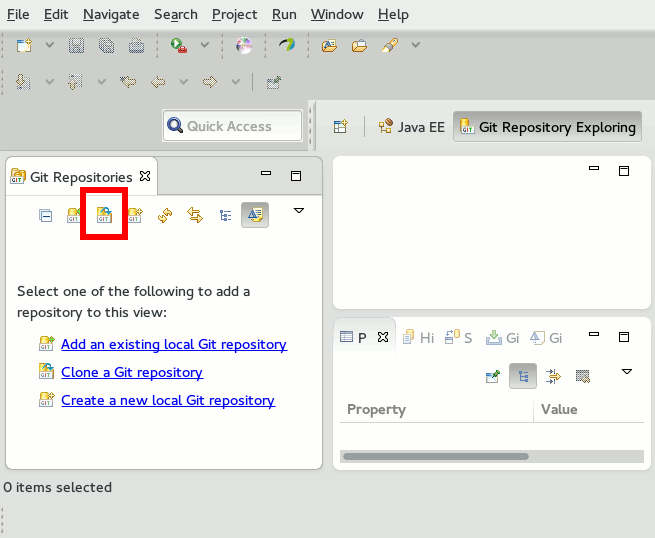
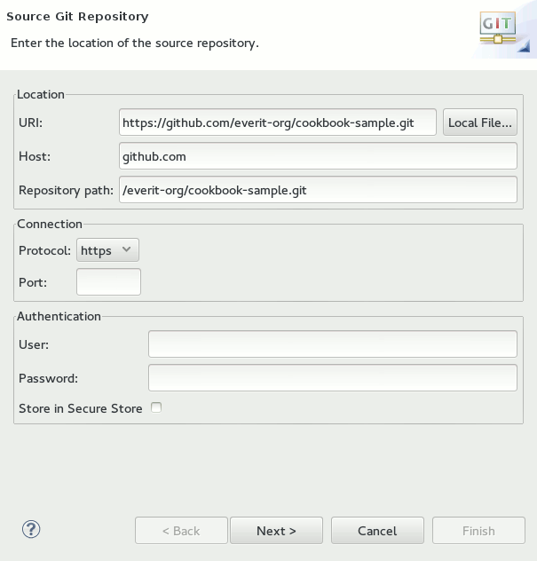

Mini How-to collection
Mini How-to collection
This section describes the common tasks carried out within the steps of the cookbook. Since many of these tasks are repeated many times throughout the book, it is better to have a section dedicated to describe these specific tasks so that its relevant paragraphs can be linked, whenever it is necessary.
Views are sub-windows in Eclipse. Views can be resized, or placed into any area of the workspace. To open a view that is not yet on the screen, select the "Window -> Show View" menu item. There are some views by default in the list, but if you cannot find the view you are looking for there, you can search for other views by selecting the "Other..." menu item.
One of the great things you get with maven is that you do not have to commit the settings of your IDE with the sources into your version control system. It is also a common mistake if a developer commits the compiled binaries, thereby making the size of the repository irreversibly large. In case of Eclipse based Java projects, many issues can be solved by creating/appending a .gitignore file into the root of every maven project (also to the root of sub-modules) with at least the following content:
/.settings /target /.classpath /.project /.checkstyle
Based on the plugins you use in your IDE, other files should also be included in .gitignore.
Start Eclipse.
Switch to the "Git Repository Exploring" perspective in Eclipse. (Window -> Open perspective -> Other..., Select the perspective from the list)
On the left side, you see the "Git Repositories" window. Click on the "Clone button".
In the "Clone Git Repository" window, enter the URL of the Git repository as you see below.
Click Next, Next and Finish. The repository should be checked out to the "USER_HOME/git/REPO_NAME" directory.
Declarative Services allows the programmers to define components that are instantiated based on configuration. Metatype allows us to define the configuration possibilities of a Component in a way that it can appear on the OSGi Web Console as well. Component structures and their configuration possibilities can be defined via XML files. However, it is also possible to put these definitions as annotations into the Java source. There are several annotation sets and code generators for Declarative Services and Metatype. Since the Felix implementation has the best support for maven-eclipse, it is presented in the following example. To use the Felix implementation, put the following snippet into the pom.xml file of the project:
<build>
...
<plugins>
...
<plugin>
<groupId>org.apache.felix</groupId>
<artifactId>maven-scr-plugin</artifactId>
<version>1.20.0</version>
<executions>
<execution>
<id>generate-scr-scrdescriptor</id>
<goals>
<goal>scr</goal>
</goals>
</execution>
</executions>
</plugin>
...
</plugins>
...
</build>
<dependencies>
...
<dependency>
<groupId>org.apache.felix</groupId>
<artifactId>org.apache.felix.scr.annotations</artifactId>
<version>1.9.8</version>
</dependency>
...
</dependencies>
This code generator (as all the others) checks the classes for annotations, extends the MANIFEST headers and generates the standard Declarative Services and Metatype XMLs in the target/classes folder of the project. This means that during runtime, the DS and Metatype technologies do not use the annotations, but only the XML and MANIFEST header entries.
As soon as m2e-lifecycle is available for the standard org.osgi.* annotations, this part of the tutorial will be replaced with the description of that annotation set.
Java properties are member variables with getter and setter methods. In the most cases, these member variables are private. There are several ways to create properties. Here is an example of creating a property "private long fooId":
Create the member variable in the class by typing it:
public class Foo {
private long fooId;
}Generate getters and setters. You have several options:
Option 1: start typing "set" in the source of the class and press CTRL+SPACE. The content assist will appear and let you select the setter method. If you select that, the setter will be generated right there. You can generate the getter in the same way.
Option 2: Press ALT+SHIFT+S in the source of the class and select "Generate getters and setters" from the context menu. In the dialog, you can select, which getters and setters you would like to generate.
The final code should look like this:
public class Foo {
private long fooId;
public long getFooId() {
return fooId;
}
public void setFooId(long fooId) {
this.fooId = fooId;
}
}Run "mvn eosgi:dist" on the tests project! If you ran mvn install previously and you have not deleted the target folder since, you can skip this one.
Go to the tests/target/eosgi-dist/felixtest/bin folder and open a command line
Start the Development OSGi container
Windows: runConsole.bat
Linux: ./runConsole.sh
After the application is started, an always-on-top OSGi Deployer window will appear.
We will use that window to deploy our changes rapidly. For more information about richconsole, please see the documentation of the project!
You have several ways of deploying projects to the development OSGi container:
Drag one or more projects from the Project Explorer of Eclipse or a file manager and drop them to the deployer window. In case of this choice, the target/classes folder of the project must be up-to-date.
Re-package the module with maven and drop the generated JAR to the deployer window.
There are many articles on the internet how to develop an immutable DTO. The requirements of a DTO are the followings:
A DTO should be serializable.
A DTO should be deserializable from custom formats like JSON.
A DTO should be immutable. In case a DTO is not immutable, it cannot be used by caches.
It is hard to satisfy all of the requirements in Java (if not impossible). An almost good sample is the following:
package test.test;
import java.io.Serializable;
public final class ImmutableDTOClass implements Serializable {
private static final long serialVersionUID = -195005209277061131L;
protected OtherImmutableDTOClass immutableProperty;
protected ImmutableDTOClass() {
}
public ImmutableDTOClass(OtherImmutableDTOClass immutableProperty) {
this.immutableProperty = immutableProperty;
}
public OtherImmutableDTOClass getImmutableProperty() {
return immutableProperty;
}
}
During the implementation of the class, the following rules were applied:
Implement the Serializable interface and generate a serialVersionUID constant! Technologies will be able to use basic java serialization in this way that might be the fastest option to send process remote objects.
Use only immutable classes for property types! If it is not possible, always clone the value of the property in the getter and return the cloned instance!
Create a protected empty constructor! If there is not one, custom serializers will not be able to instantiate the class. Well, they could with objenesis but if not necessary, it is not too good to use such evil tricks. Protected constructor can be used via reflection without calling setAccessible(true).
Qualify the member variables to be protected! The reason is the same as with constructor. They should be accessible by custom serializers without using evil tricks.
Qualify the class to be final! There should be no possibility to create a mutuable subclass of our immutable class.
The solution is nearly perfect. The only issue is that the properties can be modified without reflection from classes that are located in the same package. Well, the one who does modification in the same package, should know what he/she does.